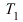
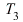
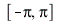
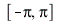
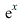
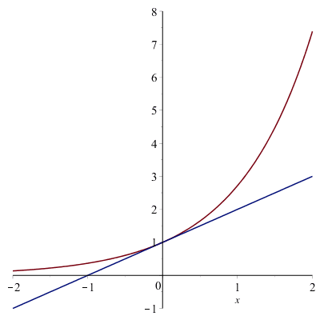
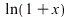

P1. Reprezentaţi pe acelaşi grafic funcţia şi aproximantele ,  şi ![T[5]](images/exempletaylor_4.gif) pe intervalul 
pe intervalul 
Soluţie.
| > |
Tn:=(n,x)->convert(taylor(sin(x),x=0,n+1),polynom); |
| > |
Tn(1,x),Tn(3,x),Tn(5,x); |
| > |
plot([sin(x),Tn(1,x),Tn(3,x),Tn(5,x)],x=-Pi..Pi,view=[-Pi..Pi,-2..2],legend=["f",typeset(T[1]),typeset(T[3]),typeset(T[5])],color=["red","green","blue","black"]); |
animaţie
| > |
for k from 1 to 15 do p[k]:=plot([sin(x),Tn(k,x)],x=-2*Pi..2*Pi,view=[-2*Pi..2*Pi,-5..5]): end do: |
| > |
plots[display](seq(p[2*i-1],i=1..8),insequence=true); |
P2. La fel pentru  , aproximatele ![T[1]](images/exempletaylor_12.gif) , ...,
, ..., ![T[5]](images/exempletaylor_13.gif) şi intervalul [-2,2].
şi intervalul [-2,2].
Soluţie.
| > |
Te:=(n,x)->convert(taylor(exp(x),x=0,n+1),polynom); |
| > |
plot([exp(x),seq(Te(k,x),k=1..5)],x=-2..5,view=[-2..2,-1..7]); |
P3. Deduceţi seria Taylor pentru  şi aproximaţi ln2 folosind primii 8 termeni. Câţi termeni sunt necesari pentru a obţine ln2 cu 5 zecimale corecte. Aceeaşi problemă pentru .
Soluţie.
| > |
apln:=convert(%,polynom); |
Câţi termeni sunt necesari?
 |
(11) |
Totuşi, lucrurile merg bine în vecinătatea originii (de exemplu pentru ln 1.1)
| > |
solve((1/10)^(n+1)/(n+1)<1e-5,n); |
Remediu: să se utilizeze dezvoltarea Taylor a lui
| > |
taylor(ln((1+x)/(1-x)),x=0,16); |
 |
(14) |
| > |
apln2:=convert(%,polynom); |
| > |
solve((1+x)/(1-x)=2,x); |
| > |
evalf(eval(apln2,x=1/3)); |
Numărul de termeni necesar
| > |
solve(2*(1/3)^(2*n+1)/(2*n+1)<1e-5); |
| > |
evalf(eval(2*x+(2/3)*x^3+(2/5)*x^5+(2/7)*x^7+2/9*x^9,x=1/3)); |